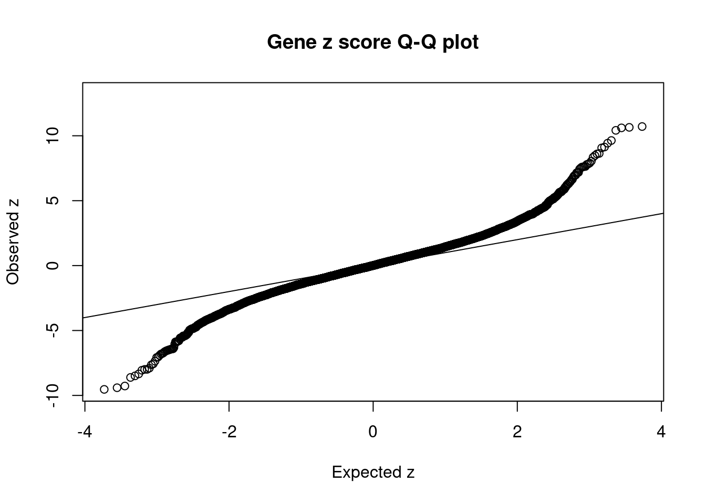

SCZ - Brain Spinal cord cervical c-1
sheng Qian
2021-2-6
Last updated: 2022-03-16
Checks: 5 2
Knit directory: cTWAS_analysis/
This reproducible R Markdown analysis was created with workflowr (version 1.7.0). The Checks tab describes the reproducibility checks that were applied when the results were created. The Past versions tab lists the development history.
The R Markdown is untracked by Git. To know which version of the R Markdown file created these results, you’ll want to first commit it to the Git repo. If you’re still working on the analysis, you can ignore this warning. When you’re finished, you can run wflow_publish to commit the R Markdown file and build the HTML.
Great job! The global environment was empty. Objects defined in the global environment can affect the analysis in your R Markdown file in unknown ways. For reproduciblity it’s best to always run the code in an empty environment.
The command set.seed(20211220) was run prior to running the code in the R Markdown file. Setting a seed ensures that any results that rely on randomness, e.g. subsampling or permutations, are reproducible.
Great job! Recording the operating system, R version, and package versions is critical for reproducibility.
Nice! There were no cached chunks for this analysis, so you can be confident that you successfully produced the results during this run.
Using absolute paths to the files within your workflowr project makes it difficult for you and others to run your code on a different machine. Change the absolute path(s) below to the suggested relative path(s) to make your code more reproducible.
| absolute | relative |
|---|---|
| /project2/xinhe/shengqian/cTWAS/cTWAS_analysis/data/ | data |
| /project2/xinhe/shengqian/cTWAS/cTWAS_analysis/code/ctwas_config.R | code/ctwas_config.R |
Great! You are using Git for version control. Tracking code development and connecting the code version to the results is critical for reproducibility.
The results in this page were generated with repository version d57314b. See the Past versions tab to see a history of the changes made to the R Markdown and HTML files.
Note that you need to be careful to ensure that all relevant files for the analysis have been committed to Git prior to generating the results (you can use wflow_publish or wflow_git_commit). workflowr only checks the R Markdown file, but you know if there are other scripts or data files that it depends on. Below is the status of the Git repository when the results were generated:
Ignored files:
Ignored: .ipynb_checkpoints/
Ignored: data/AF/
Untracked files:
Untracked: Rplot.png
Untracked: analysis/.ipynb_checkpoints/
Untracked: analysis/SCZ_2020_Brain_Amygdala.Rmd
Untracked: analysis/SCZ_2020_Brain_Anterior_cingulate_cortex_BA24.Rmd
Untracked: analysis/SCZ_2020_Brain_Caudate_basal_ganglia.Rmd
Untracked: analysis/SCZ_2020_Brain_Cerebellar_Hemisphere.Rmd
Untracked: analysis/SCZ_2020_Brain_Cerebellum.Rmd
Untracked: analysis/SCZ_2020_Brain_Hippocampus.Rmd
Untracked: analysis/SCZ_2020_Brain_Nucleus_accumbens_basal_ganglia.Rmd
Untracked: analysis/SCZ_2020_Brain_Spinal_cord_cervical_c-1.Rmd
Untracked: analysis/SCZ_2020_Brain_Substantia_nigra.Rmd
Untracked: code/.ipynb_checkpoints/
Untracked: code/AF_out/
Untracked: code/Autism_out/
Untracked: code/BMI_S_out/
Untracked: code/BMI_out/
Untracked: code/Glucose_out/
Untracked: code/LDL_S_out/
Untracked: code/SCZ_2014_EUR_out/
Untracked: code/SCZ_2020_out/
Untracked: code/SCZ_S_out/
Untracked: code/SCZ_out/
Untracked: code/T2D_out/
Untracked: code/ctwas_config.R
Untracked: code/mapping.R
Untracked: code/out/
Untracked: code/run_AF_analysis.sbatch
Untracked: code/run_AF_analysis.sh
Untracked: code/run_AF_ctwas_rss_LDR.R
Untracked: code/run_Autism_analysis.sbatch
Untracked: code/run_Autism_analysis.sh
Untracked: code/run_Autism_ctwas_rss_LDR.R
Untracked: code/run_BMI_analysis.sbatch
Untracked: code/run_BMI_analysis.sh
Untracked: code/run_BMI_analysis_S.sbatch
Untracked: code/run_BMI_analysis_S.sh
Untracked: code/run_BMI_ctwas_rss_LDR.R
Untracked: code/run_BMI_ctwas_rss_LDR_S.R
Untracked: code/run_Glucose_analysis.sbatch
Untracked: code/run_Glucose_analysis.sh
Untracked: code/run_Glucose_ctwas_rss_LDR.R
Untracked: code/run_LDL_analysis_S.sbatch
Untracked: code/run_LDL_analysis_S.sh
Untracked: code/run_LDL_ctwas_rss_LDR_S.R
Untracked: code/run_SCZ_2014_EUR_analysis.sbatch
Untracked: code/run_SCZ_2014_EUR_analysis.sh
Untracked: code/run_SCZ_2014_EUR_ctwas_rss_LDR.R
Untracked: code/run_SCZ_2020_analysis.sbatch
Untracked: code/run_SCZ_2020_analysis.sh
Untracked: code/run_SCZ_2020_ctwas_rss_LDR.R
Untracked: code/run_SCZ_analysis.sbatch
Untracked: code/run_SCZ_analysis.sh
Untracked: code/run_SCZ_analysis_S.sbatch
Untracked: code/run_SCZ_analysis_S.sh
Untracked: code/run_SCZ_ctwas_rss_LDR.R
Untracked: code/run_SCZ_ctwas_rss_LDR_S.R
Untracked: code/run_T2D_analysis.sbatch
Untracked: code/run_T2D_analysis.sh
Untracked: code/run_T2D_ctwas_rss_LDR.R
Untracked: code/wflow_build.R
Untracked: code/wflow_build.sbatch
Untracked: data/.ipynb_checkpoints/
Untracked: data/BMI/
Untracked: data/PGC3_SCZ_wave3_public.v2.tsv
Untracked: data/SCZ/
Untracked: data/SCZ_2014_EUR/
Untracked: data/SCZ_2020/
Untracked: data/SCZ_S/
Untracked: data/T2D/
Untracked: data/UKBB/
Untracked: data/UKBB_SNPs_Info.text
Untracked: data/gene_OMIM.txt
Untracked: data/gene_pip_0.8.txt
Untracked: data/mashr_Heart_Atrial_Appendage.db
Untracked: data/mashr_sqtl/
Untracked: data/summary_known_genes_annotations.xlsx
Untracked: data/untitled.txt
Unstaged changes:
Modified: analysis/SCZ_2020_Brain_Cortex.Rmd
Modified: analysis/SCZ_2020_Brain_Frontal_Cortex_BA9.Rmd
Modified: analysis/SCZ_2020_Brain_Hypothalamus.Rmd
Modified: analysis/SCZ_2020_Brain_Putamen_basal_ganglia.Rmd
Note that any generated files, e.g. HTML, png, CSS, etc., are not included in this status report because it is ok for generated content to have uncommitted changes.
There are no past versions. Publish this analysis with wflow_publish() to start tracking its development.
Weight QC
#number of imputed weights
nrow(qclist_all)[1] 10527#number of imputed weights by chromosome
table(qclist_all$chr)
1 2 3 4 5 6 7 8 9 10 11 12 13 14 15 16
1031 738 609 413 507 592 509 397 395 409 612 610 227 352 364 465
17 18 19 20 21 22
630 170 797 315 124 261 #number of imputed weights without missing variants
sum(qclist_all$nmiss==0)[1] 8543#proportion of imputed weights without missing variants
mean(qclist_all$nmiss==0)[1] 0.8115Check convergence of parameters
#estimated group prior
estimated_group_prior <- group_prior_rec[,ncol(group_prior_rec)]
names(estimated_group_prior) <- c("gene", "snp")
estimated_group_prior["snp"] <- estimated_group_prior["snp"]*thin #adjust parameter to account for thin argument
print(estimated_group_prior) gene snp
0.0127710 0.0002755 #estimated group prior variance
estimated_group_prior_var <- group_prior_var_rec[,ncol(group_prior_var_rec)]
names(estimated_group_prior_var) <- c("gene", "snp")
print(estimated_group_prior_var) gene snp
15.89 12.53 #report sample size
print(sample_size)[1] 161405#report group size
group_size <- c(nrow(ctwas_gene_res), n_snps)
print(group_size)[1] 10527 7394310#estimated group PVE
estimated_group_pve <- estimated_group_prior_var*estimated_group_prior*group_size/sample_size #check PVE calculation
names(estimated_group_pve) <- c("gene", "snp")
print(estimated_group_pve) gene snp
0.01323 0.15811 #compare sum(PIP*mu2/sample_size) with above PVE calculation
c(sum(ctwas_gene_res$PVE),sum(ctwas_snp_res$PVE))[1] 0.04603 0.79565Genes with highest PIPs
genename region_tag susie_pip mu2 PVE z num_eqtl
10447 ZNF823 19_10 0.9822 40.58 2.470e-04 6.311 1
11504 AC012074.2 2_15 0.9658 29.78 1.782e-04 5.338 2
245 VSIG2 11_77 0.8994 49.79 2.774e-04 -7.361 1
2173 TLE4 9_38 0.8939 26.92 1.491e-04 5.000 1
865 KLHL20 1_85 0.8894 39.68 2.186e-04 -5.800 1
6680 ACE 17_37 0.8677 34.44 1.852e-04 -5.876 1
5097 C12orf10 12_33 0.8633 24.37 1.303e-04 -4.963 1
8557 MAP3K11 11_36 0.8430 33.25 1.737e-04 -5.570 1
7444 GTF2A1 14_39 0.8366 24.69 1.280e-04 -4.850 1
5485 RIT1 1_76 0.8259 24.31 1.244e-04 -4.023 1
5204 CPNE2 16_30 0.8172 21.49 1.088e-04 -4.125 1
3348 PTK2B 8_27 0.8007 23.35 1.159e-04 3.846 1
11457 HIST1H2BN 6_21 0.7935 181.54 8.924e-04 13.182 1
4275 ACY3 11_37 0.7916 19.99 9.804e-05 -3.260 1
2760 PDCD10 3_103 0.7716 23.17 1.107e-04 -4.520 1
12120 CEP95 17_37 0.7631 20.72 9.798e-05 -3.800 1
9567 NIPSNAP1 22_10 0.7619 23.26 1.098e-04 -4.302 2
12740 RP11-47A8.5 10_66 0.7617 37.04 1.748e-04 4.359 1
10453 RPL12 9_66 0.7558 24.49 1.147e-04 4.655 2
3842 ZNF835 19_38 0.7451 27.55 1.272e-04 5.136 1Genes with largest effect sizes
genename region_tag susie_pip mu2 PVE z num_eqtl
122 CACNA2D2 3_35 7.123e-01 355.58 1.569e-03 -0.1392 1
2799 HEMK1 3_35 3.002e-04 304.00 5.653e-07 0.4441 1
2800 CISH 3_35 6.345e-05 249.47 9.806e-08 -0.1383 1
11457 HIST1H2BN 6_21 7.935e-01 181.54 8.924e-04 13.1822 1
7229 TEX264 3_35 6.042e-05 136.41 5.106e-08 0.3106 1
38 RBM6 3_35 5.610e-01 120.33 4.182e-04 4.4688 1
5732 PPP1R18 6_24 3.105e-02 116.21 2.236e-05 10.6084 1
7227 MST1R 3_35 4.412e-03 114.51 3.130e-06 -4.0250 1
10032 SLC38A3 3_35 1.933e-02 111.49 1.335e-05 -2.7756 1
9594 HIST1H1B 6_21 2.010e-02 110.54 1.376e-05 -9.5356 1
4928 ARL3 10_66 1.802e-02 85.22 9.514e-06 9.6347 1
9231 HIST1H2BC 6_20 1.399e-02 83.97 7.278e-06 -7.9928 1
10755 ABHD16A 6_26 4.696e-01 83.92 2.442e-04 10.7104 1
10760 APOM 6_26 2.793e-01 82.50 1.428e-04 10.6484 1
4810 PGBD1 6_22 6.233e-02 79.79 3.081e-05 -7.9952 2
12858 HIST1H2BO 6_21 1.080e-02 79.14 5.294e-06 -8.0633 1
11740 C4A 6_26 4.950e-02 78.93 2.421e-05 10.4180 1
10718 HLA-DMA 6_27 5.976e-01 78.21 2.896e-04 -9.4080 1
7223 RNF123 3_35 7.831e-05 77.43 3.757e-08 -2.3622 1
9836 BTN3A2 6_20 1.692e-01 69.76 7.312e-05 6.9759 1Genes with highest PVE
genename region_tag susie_pip mu2 PVE z num_eqtl
122 CACNA2D2 3_35 0.7123 355.58 0.0015693 -0.1392 1
11457 HIST1H2BN 6_21 0.7935 181.54 0.0008924 13.1822 1
38 RBM6 3_35 0.5610 120.33 0.0004182 4.4688 1
10718 HLA-DMA 6_27 0.5976 78.21 0.0002896 -9.4080 1
7191 PBRM1 3_36 0.6688 67.43 0.0002794 9.4285 1
245 VSIG2 11_77 0.8994 49.79 0.0002774 -7.3608 1
10447 ZNF823 19_10 0.9822 40.58 0.0002470 6.3109 1
10755 ABHD16A 6_26 0.4696 83.92 0.0002442 10.7104 1
2890 SF3B1 2_117 0.7085 53.19 0.0002335 7.6053 1
865 KLHL20 1_85 0.8894 39.68 0.0002186 -5.7996 1
9217 HARBI1 11_28 0.5005 60.02 0.0001861 8.0462 1
6680 ACE 17_37 0.8677 34.44 0.0001852 -5.8759 1
11504 AC012074.2 2_15 0.9658 29.78 0.0001782 5.3381 2
12740 RP11-47A8.5 10_66 0.7617 37.04 0.0001748 4.3592 1
8557 MAP3K11 11_36 0.8430 33.25 0.0001737 -5.5697 1
7697 PDIA3 15_16 0.6457 38.37 0.0001535 6.3137 1
2173 TLE4 9_38 0.8939 26.92 0.0001491 4.9996 1
9176 PUF60 8_94 0.6967 34.26 0.0001479 -5.7929 1
10760 APOM 6_26 0.2793 82.50 0.0001428 10.6484 1
3313 SNX19 11_81 0.6239 36.33 0.0001404 5.7884 2Genes with largest z scores
genename region_tag susie_pip mu2 PVE z num_eqtl
11457 HIST1H2BN 6_21 0.7934544 181.54 8.924e-04 13.182 1
10755 ABHD16A 6_26 0.4695729 83.92 2.442e-04 10.710 1
10760 APOM 6_26 0.2792986 82.50 1.428e-04 10.648 1
5732 PPP1R18 6_24 0.0310507 116.21 2.236e-05 10.608 1
11740 C4A 6_26 0.0495023 78.93 2.421e-05 10.418 1
4928 ARL3 10_66 0.0180206 85.22 9.514e-06 9.635 1
9594 HIST1H1B 6_21 0.0200951 110.54 1.376e-05 -9.536 1
7191 PBRM1 3_36 0.6687926 67.43 2.794e-04 9.429 1
10718 HLA-DMA 6_27 0.5975593 78.21 2.896e-04 -9.408 1
10732 PRRT1 6_26 0.0120671 59.41 4.442e-06 -9.276 1
10729 RNF5 6_26 0.0149009 61.34 5.663e-06 9.132 2
7190 GNL3 3_36 0.1445801 64.38 5.767e-05 9.065 2
6037 ABCB9 12_75 0.0008065 64.68 3.232e-07 8.638 1
9354 ARL6IP4 12_75 0.0007298 64.25 2.905e-07 -8.615 1
2511 OGFOD2 12_75 0.0006966 64.13 2.768e-07 8.602 1
7893 SMIM4 3_36 0.0178696 57.81 6.400e-06 -8.494 1
440 MPHOSPH9 12_75 0.0004506 60.76 1.696e-07 8.479 2
7004 TYW5 2_118 0.3605961 48.60 1.086e-04 -8.344 1
7005 MAIP1 2_118 0.3605961 48.60 1.086e-04 8.344 1
12858 HIST1H2BO 6_21 0.0107971 79.14 5.294e-06 -8.063 1Comparing z scores and PIPs

[1] 0.01596GO enrichment analysis for genes with PIP>0.5
#number of genes for gene set enrichment
length(genes)[1] 66Uploading data to Enrichr... Done.
Querying GO_Biological_Process_2021... Done.
Querying GO_Cellular_Component_2021... Done.
Querying GO_Molecular_Function_2021... Done.
Parsing results... Done.
[1] "GO_Biological_Process_2021"[1] Term Overlap Adjusted.P.value Genes
<0 rows> (or 0-length row.names)
[1] "GO_Cellular_Component_2021"[1] Term Overlap Adjusted.P.value Genes
<0 rows> (or 0-length row.names)
[1] "GO_Molecular_Function_2021"[1] Term Overlap Adjusted.P.value Genes
<0 rows> (or 0-length row.names)DisGeNET enrichment analysis for genes with PIP>0.5
Description FDR Ratio BgRatio
164 Follicular thyroid carcinoma 0.02733 2/28 5/9703
162 Thymic Carcinoma 0.02859 2/28 7/9703
5 Alcoholic Intoxication, Chronic 0.03184 5/28 268/9703
63 Infant, Premature, Diseases 0.03184 1/28 1/9703
93 Noonan Syndrome 0.03184 2/28 24/9703
98 Pneumonia, Viral 0.03184 1/28 1/9703
113 Splenic Neoplasms 0.03184 1/28 1/9703
144 Malignant neoplasm of spleen 0.03184 1/28 1/9703
150 LEOPARD Syndrome 0.03184 2/28 22/9703
194 Woolly hair nevus 0.03184 1/28 1/9703WebGestalt enrichment analysis for genes with PIP>0.5
Loading the functional categories...
Loading the ID list...
Loading the reference list...
Performing the enrichment analysis...Warning in oraEnrichment(interestGeneList, referenceGeneList, geneSet, minNum =
minNum, : No significant gene set is identified based on FDR 0.05!NULLPIP Manhattan Plot
Warning: 'timedatectl' indicates the non-existent timezone name 'n/a'Warning: Your system is mis-configured: '/etc/localtime' is not a symlinkWarning: It is strongly recommended to set envionment variable TZ to 'America/
Chicago' (or equivalent)Warning: ggrepel: 22 unlabeled data points (too many overlaps). Consider
increasing max.overlaps
Sensitivity, specificity and precision for silver standard genes
#number of genes in known annotations
print(length(known_annotations))[1] 130#number of genes in known annotations with imputed expression
print(sum(known_annotations %in% ctwas_gene_res$genename))[1] 58#significance threshold for TWAS
print(sig_thresh)[1] 4.576#number of ctwas genes
length(ctwas_genes)[1] 12#number of TWAS genes
length(twas_genes)[1] 168#show novel genes (ctwas genes with not in TWAS genes)
ctwas_gene_res[ctwas_gene_res$genename %in% novel_genes,report_cols] genename region_tag susie_pip mu2 PVE z num_eqtl
5485 RIT1 1_76 0.8259 24.31 0.0001244 -4.023 1
3348 PTK2B 8_27 0.8007 23.35 0.0001159 3.846 1
5204 CPNE2 16_30 0.8172 21.49 0.0001088 -4.125 1#sensitivity / recall
print(sensitivity) ctwas TWAS
0.01538 0.16154 #specificity
print(specificity)ctwas TWAS
0.999 0.986 #precision / PPV
print(precision) ctwas TWAS
0.1667 0.1250 cTWAS is more precise than TWAS in distinguishing silver standard and bystander genes
#number of genes in known annotations (with imputed expression)
print(length(known_annotations))[1] 58#number of bystander genes (with imputed expression)
print(length(unrelated_genes))[1] 709#subset results to genes in known annotations or bystanders
ctwas_gene_res_subset <- ctwas_gene_res[ctwas_gene_res$genename %in% c(known_annotations, unrelated_genes),]
#assign ctwas and TWAS genes
ctwas_genes <- ctwas_gene_res_subset$genename[ctwas_gene_res_subset$susie_pip>0.8]
twas_genes <- ctwas_gene_res_subset$genename[abs(ctwas_gene_res_subset$z)>sig_thresh]
#significance threshold for TWAS
print(sig_thresh)[1] 4.576#number of ctwas genes (in known annotations or bystanders)
length(ctwas_genes)[1] 5#number of TWAS genes (in known annotations or bystanders)
length(twas_genes)[1] 58#sensitivity / recall
sensitivity ctwas TWAS
0.03448 0.36207 #specificity / (1 - False Positive Rate)
specificity ctwas TWAS
0.9958 0.9478 #precision / PPV / (1 - False Discovery Rate)
precision ctwas TWAS
0.4000 0.3621 pip_range <- (0:1000)/1000
sensitivity <- rep(NA, length(pip_range))
specificity <- rep(NA, length(pip_range))
for (index in 1:length(pip_range)){
pip <- pip_range[index]
ctwas_genes <- ctwas_gene_res_subset$genename[ctwas_gene_res_subset$susie_pip>=pip]
sensitivity[index] <- sum(ctwas_genes %in% known_annotations)/length(known_annotations)
specificity[index] <- sum(!(unrelated_genes %in% ctwas_genes))/length(unrelated_genes)
}
plot(1-specificity, sensitivity, type="l", xlim=c(0,1), ylim=c(0,1), main="", xlab="1 - Specificity", ylab="Sensitivity")
title(expression("ROC Curve for cTWAS (black) and TWAS (" * phantom("red") * ")"))
title(expression(phantom("ROC Curve for cTWAS (black) and TWAS (") * "red" * phantom(")")), col.main="red")
sig_thresh_range <- seq(from=0, to=max(abs(ctwas_gene_res_subset$z)), length.out=length(pip_range))
for (index in 1:length(sig_thresh_range)){
sig_thresh_plot <- sig_thresh_range[index]
twas_genes <- ctwas_gene_res_subset$genename[abs(ctwas_gene_res_subset$z)>=sig_thresh_plot]
sensitivity[index] <- sum(twas_genes %in% known_annotations)/length(known_annotations)
specificity[index] <- sum(!(unrelated_genes %in% twas_genes))/length(unrelated_genes)
}
lines(1-specificity, sensitivity, xlim=c(0,1), ylim=c(0,1), col="red", lty=1)
abline(a=0,b=1,lty=3)
#add previously computed points from the analysis
ctwas_genes <- ctwas_gene_res_subset$genename[ctwas_gene_res_subset$susie_pip>0.8]
twas_genes <- ctwas_gene_res_subset$genename[abs(ctwas_gene_res_subset$z)>sig_thresh]
points(1-specificity_plot["ctwas"], sensitivity_plot["ctwas"], pch=21, bg="black")
points(1-specificity_plot["TWAS"], sensitivity_plot["TWAS"], pch=21, bg="red")Undetected silver standard genes have low TWAS z-scores or stronger signal from nearby variants
#table of outcomes for silver standard genes
-sort(-table(silver_standard_case))silver_standard_case
Not Imputed Insignificant z-score Nearby SNP(s)
72 37 18
Detected (PIP > 0.8) Nearby Bystander Gene
2 1 #show inconclusive genes
silver_standard_case[silver_standard_case=="Inconclusive"]named character(0)
sessionInfo()R version 3.6.1 (2019-07-05)
Platform: x86_64-pc-linux-gnu (64-bit)
Running under: Scientific Linux 7.4 (Nitrogen)
Matrix products: default
BLAS/LAPACK: /software/openblas-0.2.19-el7-x86_64/lib/libopenblas_haswellp-r0.2.19.so
locale:
[1] LC_CTYPE=en_US.UTF-8 LC_NUMERIC=C
[3] LC_TIME=en_US.UTF-8 LC_COLLATE=en_US.UTF-8
[5] LC_MONETARY=en_US.UTF-8 LC_MESSAGES=en_US.UTF-8
[7] LC_PAPER=en_US.UTF-8 LC_NAME=C
[9] LC_ADDRESS=C LC_TELEPHONE=C
[11] LC_MEASUREMENT=en_US.UTF-8 LC_IDENTIFICATION=C
attached base packages:
[1] parallel stats4 stats graphics grDevices utils datasets
[8] methods base
other attached packages:
[1] GenomicRanges_1.36.1 GenomeInfoDb_1.20.0 IRanges_2.18.1
[4] S4Vectors_0.22.1 BiocGenerics_0.30.0 biomaRt_2.40.1
[7] readxl_1.3.1 forcats_0.5.1 stringr_1.4.0
[10] dplyr_1.0.7 purrr_0.3.4 readr_2.1.1
[13] tidyr_1.1.4 tidyverse_1.3.1 tibble_3.1.6
[16] WebGestaltR_0.4.4 disgenet2r_0.99.2 enrichR_3.0
[19] cowplot_1.1.1 ggplot2_3.3.5 workflowr_1.7.0
loaded via a namespace (and not attached):
[1] ggbeeswarm_0.6.0 colorspace_2.0-2 rjson_0.2.20
[4] ellipsis_0.3.2 rprojroot_2.0.2 XVector_0.24.0
[7] fs_1.5.2 rstudioapi_0.13 farver_2.1.0
[10] ggrepel_0.9.1 bit64_4.0.5 AnnotationDbi_1.46.0
[13] fansi_1.0.2 lubridate_1.8.0 xml2_1.3.3
[16] codetools_0.2-16 doParallel_1.0.17 cachem_1.0.6
[19] knitr_1.36 jsonlite_1.7.2 apcluster_1.4.8
[22] Cairo_1.5-12.2 broom_0.7.10 dbplyr_2.1.1
[25] compiler_3.6.1 httr_1.4.2 backports_1.4.1
[28] assertthat_0.2.1 Matrix_1.2-18 fastmap_1.1.0
[31] cli_3.1.0 later_0.8.0 prettyunits_1.1.1
[34] htmltools_0.5.2 tools_3.6.1 igraph_1.2.10
[37] GenomeInfoDbData_1.2.1 gtable_0.3.0 glue_1.6.2
[40] reshape2_1.4.4 doRNG_1.8.2 Rcpp_1.0.8
[43] Biobase_2.44.0 cellranger_1.1.0 jquerylib_0.1.4
[46] vctrs_0.3.8 svglite_1.2.2 iterators_1.0.14
[49] xfun_0.29 ps_1.6.0 rvest_1.0.2
[52] lifecycle_1.0.1 rngtools_1.5.2 XML_3.99-0.3
[55] zlibbioc_1.30.0 getPass_0.2-2 scales_1.1.1
[58] vroom_1.5.7 hms_1.1.1 promises_1.0.1
[61] yaml_2.2.1 curl_4.3.2 memoise_2.0.1
[64] ggrastr_1.0.1 gdtools_0.1.9 stringi_1.7.6
[67] RSQLite_2.2.8 highr_0.9 foreach_1.5.2
[70] rlang_1.0.1 pkgconfig_2.0.3 bitops_1.0-7
[73] evaluate_0.14 lattice_0.20-38 labeling_0.4.2
[76] bit_4.0.4 processx_3.5.2 tidyselect_1.1.1
[79] plyr_1.8.6 magrittr_2.0.2 R6_2.5.1
[82] generics_0.1.1 DBI_1.1.2 pillar_1.6.4
[85] haven_2.4.3 whisker_0.3-2 withr_2.4.3
[88] RCurl_1.98-1.5 modelr_0.1.8 crayon_1.5.0
[91] utf8_1.2.2 tzdb_0.2.0 rmarkdown_2.11
[94] progress_1.2.2 grid_3.6.1 data.table_1.14.2
[97] blob_1.2.2 callr_3.7.0 git2r_0.26.1
[100] reprex_2.0.1 digest_0.6.29 httpuv_1.5.1
[103] munsell_0.5.0 beeswarm_0.2.3 vipor_0.4.5